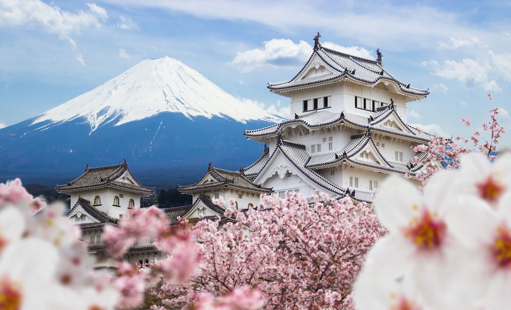

1. Dotonbori
Dotonbori var så fint. Billboardsen, skyltarna och lamporna var så fint. Jag är själv en "hong kongare" typ, så detta gav mig lite hong kong vibes för innan hade Hong Kong neon lights men regering har tagit bort de flesta.

Dotonbori var så fint. Billboardsen, skyltarna och lamporna var så fint. Jag är själv en "hong kongare" typ, så detta gav mig lite hong kong vibes för innan hade Hong Kong neon lights men regering har tagit bort de flesta.

Family Mart är direkt ingen plats, men jag blev förälskad i det så jag behövde skriva med det här. Största convience store företaget i Japan med 7/11 och Lawson. Det finns allting här asså, och allting är så himla billigt också. Om man är en fattig student i Japan kan man lätt klara sig med bara Family mart

Lite samma vibes som Dotonbori, men Shibuya var lite större. Här fanns mycket mer billboards och på natten är det jättefint.